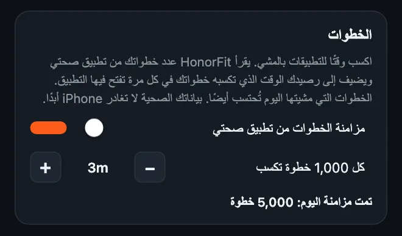
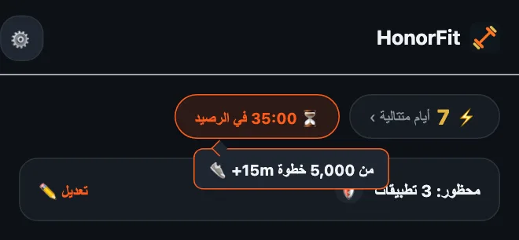

خطواتك تكسب لك الآن وقتًا أمام الشاشة
أهلًا بالجميع! كلمة سريعة عن أحدث ميزة في HonorFit، وقد جاءت مباشرة من رسالة أرسلها أحد المستخدمين. HonorFit هو حاجب التطبيقات الذي تكسب فيه وقتك أمام الشاشة بتمارين الضغط (أو القرفصاء، أو كيجل، أو أي تمرين تختاره) بنظام الشرف. بلا كاميرا.
سألني أحد المستخدمين: هاتفي يعدّ خطواتي أصلًا، فلماذا لا تكسب لي وقتًا هي أيضًا؟ سؤال في محله. والآن صارت تفعل. يستطيع HonorFit قراءة عدد خطواتك من Apple Health على iPhone أو من Health Connect على Android، وتحويله إلى وقت في التطبيقات تلقائيًا.
كيف تفعّلها
- حدّث HonorFit إلى الإصدار 1.18.0 أو أحدث.
- اضغط على الترس في الشاشة الرئيسية وابحث عن بطاقة الخطوات.
- فعّل مزامنة الخطوات من Apple Health (على iPhone) أو مزامنة الخطوات من Health Connect (على Android).
- اسمح بـ الخطوات حين يسألك هاتفك. HonorFit يطلب قراءة الخطوات فقط. لا شيء غيرها.
هذا كل شيء. الخطوات التي مشيتها اليوم تُحسب فورًا، وسترى «تمت المزامنة اليوم» مع عدد خطواتك تحت المفتاح.

على Android تحتاج إلى Health Connect، وهو مدمج بدءًا من Android 14. على الهواتف الأقدم يرسلك HonorFit إلى Google Play لتنزيله. وتحتاج أيضًا إلى تطبيق يسجّل الخطوات في Health Connect، مثل Google Fit أو Samsung Health أو Fitbit. كون هاتفك يعدّ الخطوات في مكان ما لا يعني دائمًا أنه يشاركها.
كم من الوقت تكسب الخطوات؟
افتراضيًا، كل 1000 خطوة تكسب 3 دقائق. يمكنك تغيير ذلك تحت المفتاح مباشرة، من جزء من الثانية حتى أي قيمة تريدها.
| الخطوات | بقيمة 3 دقائق لكل 1000 (الافتراضي) | بقيمة 5 دقائق لكل 1000 |
|---|---|---|
| 2000 (مشي نحو 20 دقيقة تقريبًا) | 6 دقائق | 10 دقائق |
| 5000 | 15 دقيقة | 25 دقيقة |
| 10000 | 30 دقيقة | 50 دقيقة |
كيف أختار أنا: المشي الهادئ نحو 100 خطوة في الدقيقة، بزيادة أو نقصان. إذا كنت قد أعددت تمرين مشي بالوقت بقيمته الافتراضية 30 ثانية لكل دقيقة، فإن نحو 5 دقائق لكل 1000 خطوة يجعل خطواتك ومشيك المسجّل بالقيمة نفسها تقريبًا. وإذا كنت تمشي كثيرًا على أي حال (الكلب، الطريق إلى العمل، عمل يبقيك واقفًا)، فاجعلها أقل حتى لا تُفتح تطبيقاتك مجانًا كل يوم.
متى تظهر الخطوات؟
في كل مرة تفتح فيها HonorFit. ويشمل ذلك فتحه من شاشة القفل حين ينتهي وقت تطبيق محجوب. يقرأ مجموع خطواتك لليوم، ويدّخر الخطوات التي مشيتها منذ آخر مرة، ويعرض في الشاشة الرئيسية فقاعة صغيرة مثل «👟 +15 د من 5000 خطوة».

فالطريقة هي: اخرج للمشي، ثم افتح HonorFit، وستجد وقتك هناك. لا يدفع لك أبدًا مرتين مقابل الخطوات نفسها. إذا كانت آخر مزامنة بالأمس، فالخطوات التي مشيتها في وقت متأخر أمس تُحسب للأمس أولًا. ومع تفعيل «إعادة الضبط عند منتصف الليل»، تظهر تلك الخطوات المتأخرة في سجل الأمس، لكنها لا تضيف وقتًا إلى اليوم، لأن رصيد الأمس قد أُعيد ضبطه بالفعل.
HonorFit لا يقرأ خطواتك في الخلفية. يقرؤها فقط حين تفتحه. ويظهر سجل خطواتك في السجل ضمن عرض الخطوات الخاص به.
هل هي مجانية؟
نعم، مزامنة الخطوات مجانية، ولا حد لعدد الخطوات. الحد الوحيد في النسخة المجانية الذي ينطبق هنا هو المعتاد: النسخة المجانية تدّخر حتى ساعتين من وقت التطبيقات. إذا امتلأ رصيدك، فالخطوات الزائدة لا تُرحَّل. أما Pro (3 دولارات شهريًا أو 19.99 دولارًا مرة واحدة في الولايات المتحدة) فيدّخر وقتًا بلا حدود.
أمران صغيران آخران: «الوضع الصعب» و«وضع المرض» يغيّران قيمة تكراراتك فقط، لا خطواتك. والخطوات لا تُحسب تمرينًا لسلسلة أيامك. اعمل بعض التكرارات لذلك.
ملاحظة صادقة عن نظام الشرف: إذا سجّلت تمرين مشي بالوقت وزامنت خطواتك، فأنت تأخذ أجرك مرتين عن المشية نفسها. لن يمنعك أحد، لكن اختر واحدًا. اقتراحي: دع الخطوات تغطي مشيك اليومي، وسجّل التمارين للتمارين الحقيقية.
ترى 0 خطوة؟
- على iPhone: لا يخبر iOS التطبيقات أبدًا إن كنت قد رفضت قراءة الخطوات. يعطيها صفرًا فحسب. افتح تطبيق صحتي، واضغط على صورة ملفك الشخصي، ثم التطبيقات ← HonorFit، وفعّل الخطوات.
- على Android: افتح Health Connect (تعرض بطاقة الخطوات في HonorFit زر فتح Health Connect حين لا تجد خطوات) وتأكد أن HonorFit يستطيع قراءة الخطوات. ثم تأكد أن تطبيق الخطوات لديك، مثل Google Fit أو Samsung Health أو Fitbit، يكتب الخطوات في Health Connect.
- ثم ارجع إلى HonorFit. سيتحقق مرة أخرى بمجرد عودتك إلى شاشة الإعدادات.
وماذا عن بياناتي الصحية؟
يقرأ HonorFit شيئًا واحدًا: عدد خطواتك. لا يكتب أي شيء في Apple Health أو Health Connect أبدًا، والرقم لا يغادر هاتفك أبدًا. لا يوجد حساب ولا خادم يمكن أن يذهب إليه. التفاصيل الكاملة في سياسة الخصوصية (بالإنجليزية).
إذا كانت لديك أفكار مثل هذه، فإن صفحة الدعم (بالإنجليزية) تصل مباشرة إلى بريدي. هذه الميزة كلها موجودة لأن أحدهم كتب لي.
HonorFit Blocker حاجب تطبيقات مجاني لـ iPhone وAndroid. اكسب وقتك أمام الشاشة بتمارين الضغط، أو أي تمرين تختاره، والآن بخطواتك أيضًا. نظام الشرف، بلا كاميرا، ولا شيء يغادر هاتفك.